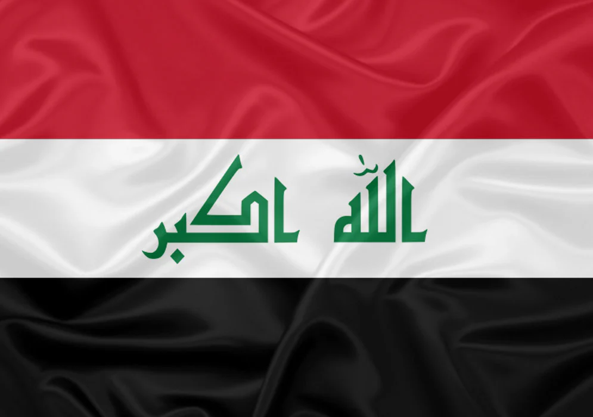

Copa do mundo 2026
Iraque

Cultura
- A cultura do Iraque, atualmente tendo a religião como uma das suas principais bases, é uma das mais antigas do mundo. O país possuí vários sítios arqueológicos, contendo artefatos que remetem a tradições antigas iraquianas e à antiga Mesopotâmia. Seus pratos tradicionais possuem sabores árabes, com alguns pratos populares, como o kebab, cafta, masgouf, entre outros.
Jogadores da COPA 2026